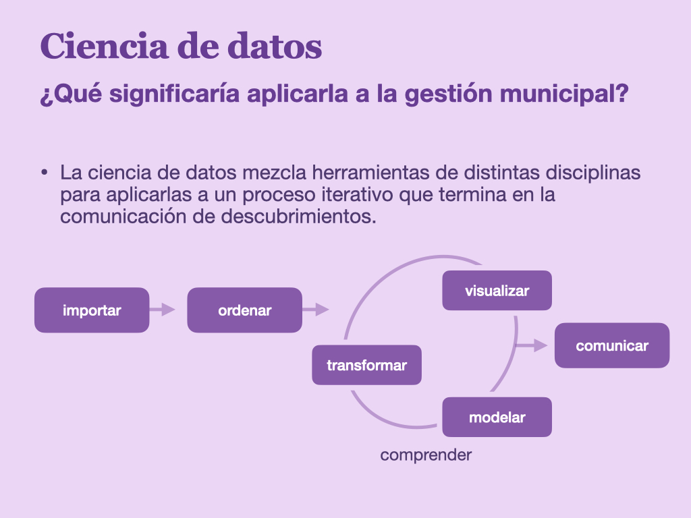
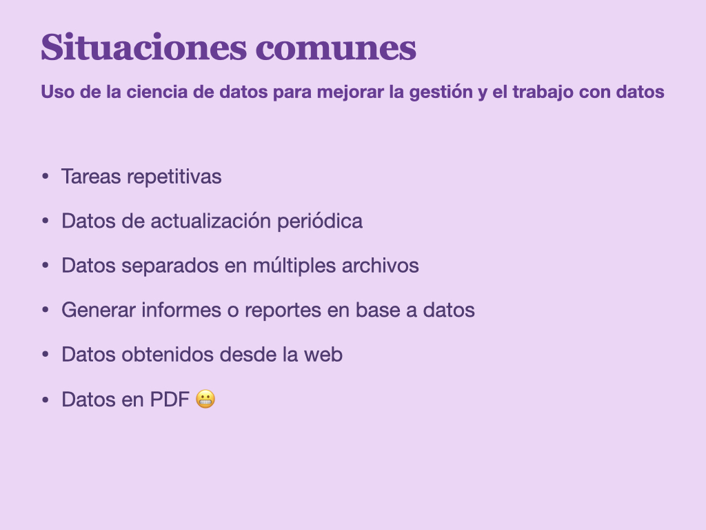
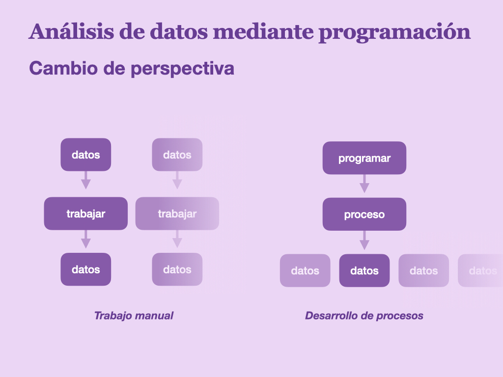
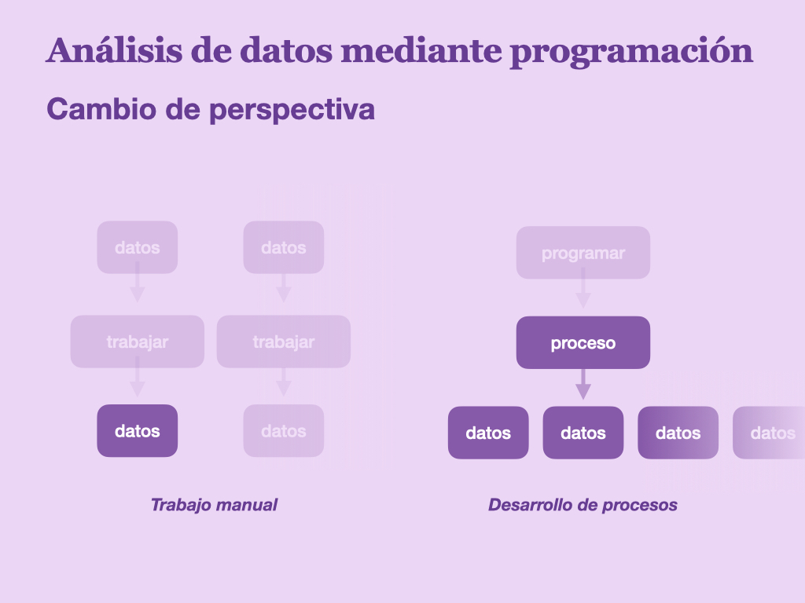
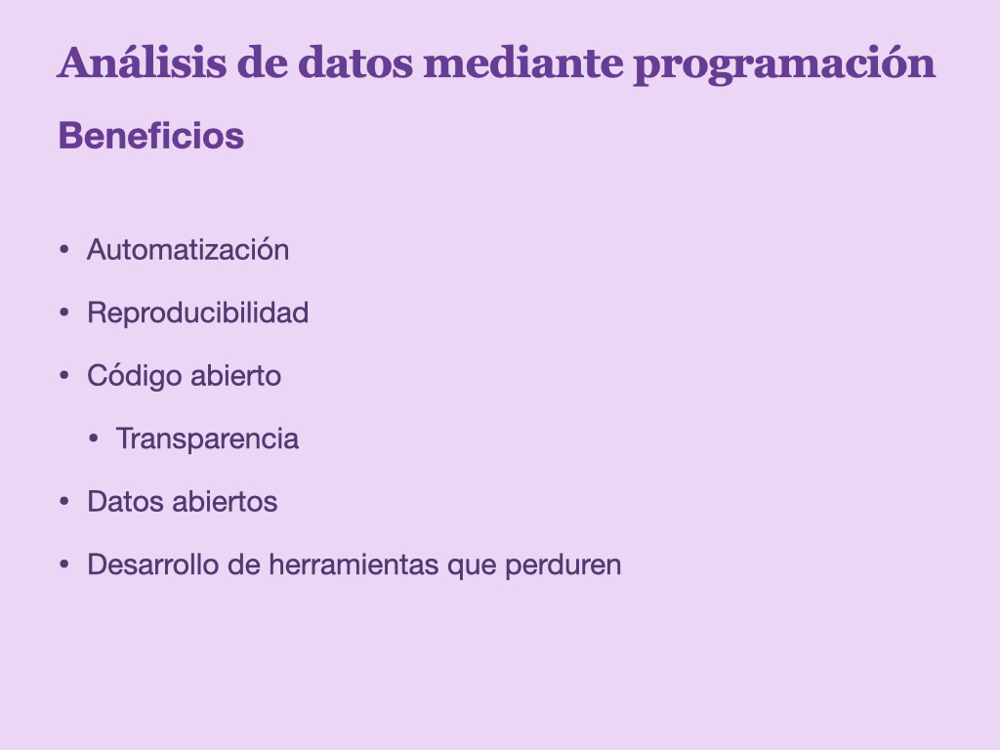
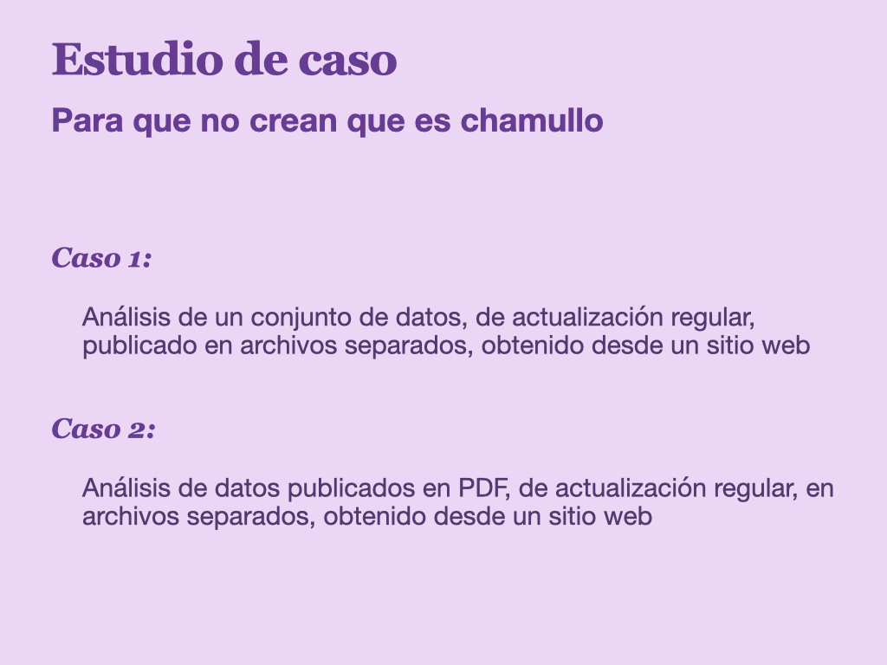

Video: Taller Aplicación de la Ciencia de Datos en la Gestión Municipal
24/1/2025
Tuve el privilegio de exponer en la Universidad Internacional de la Municipalidad de Rancagua, un espacio de diálogo, aprendizaje y colaboración, organizado por el Programa de Gobierno Local Abierto (GOBLA) de la Municipalidad de Rancagua.
Presenté un taller dirigido a funcionarios y funcionarias municipales sobre Aplicación de la ciencia de datos en la Gestión Municipal, donde comuniqué la importancia de manejar herramientas de progamación para le análisis de datos, favoreciendo el desarrollo de herramientas reutilizables, reproducibles, transparentes y abiertas.
Fue una instancia muy interesante, con mucha participación e interés de personas dentro y fuera del sector público, donde espero haber comunicado la importancia de las iniciativas de código y datos abiertos! Y que mucha más gente y funcionarios municipales sigan creando iniciativas de análisis de datos para el beneficio de todas y todos 💜
Las Jornadas de Buenas Prácticas de la UNIM son un espacio de formación donde se promueve la colaboración e intercambio de experiencias exitosas en el sector público nacional e internacional. Generando una oportunidad para potenciar las competencias técnicas, el conocimiento y la capacidad de innovar.
Diapositivas
     
Estudio de caso 1
Análisis de datos obtenidos desde Transparencia, mostrando la capacidad de reutilizar código, y de automatizar la descarga de los datos manejando un navegador usando código.
Análisis de datos
# fuente de los datos:
# https://www.portaltransparencia.cl/PortalPdT/directorio-de-organismos-regulados/?org=MU260#
# para descargar, entrar a "04. Personal y remuneraciones", luego "Personal a Contrata"
# cargar librerías
library(tidyverse)
# cargar datos descargados
datos <- read_csv2("caso_1_personal_contrata/TransparenciaActiva.csv",
locale = locale(encoding = "latin1")) |>
# limpiar nombres de columnas
janitor::clean_names()
# en este bloque de código, si cambiamos la ruta del archivo cargado, podemos re-aplicar todo el procedimiento a cualquier archivo que tengamos, permitiendo reutilizar el script completo para cada archivo de datos de la plataforma de Transparencia
# conteo rápido de una variable
datos |>
count(estamento)
# revisión rápida de los datos
datos |>
glimpse()
# ejemplo 1a: limpiar una columna de remuneraciones
datos |>
select(starts_with("remunera")) |>
mutate(remuneracion_bruta_mensualizada = parse_number(remuneracion_bruta_mensualizada,
locale = locale(grouping_mark = ".")))
# ejemplo 1b: reutilizar el código anterior para limpiar todas las columnas de remuneraciones al mismo tiempo
datos2 <- datos |>
# select(starts_with("remunera")) |>
mutate(across(starts_with("remunera"),
\(var) parse_number(var, locale = locale(grouping_mark = ".")))) |>
print()
# ejemplo 2a: obtener estadísticos descriptivos de una de las variables de remuneraciones
datos2 |>
group_by(estamento) |>
summarize(mean = mean(remuneracion_liquida_mensualizada),
mediana = median(remuneracion_liquida_mensualizada),
min = min(remuneracion_liquida_mensualizada),
max = max(remuneracion_liquida_mensualizada),
x25 = quantile(remuneracion_liquida_mensualizada, .25))
# ejemplo 2b: reutilizar el código anterior para obtener estadísticos descriptivos de otra variable, agrupada por una variable distinta
datos2 |>
group_by(grado_eus_o_jornada) |>
summarize(mean = mean(remuneracion_liquida_mensualizada),
mediana = median(remuneracion_liquida_mensualizada),
min = min(remuneracion_liquida_mensualizada),
max = max(remuneracion_liquida_mensualizada),
x25 = quantile(remuneracion_liquida_mensualizada, .25),
n = n()) |>
arrange(desc(mediana))
Obtención automatizada de los datos de Transparencia con Selenium
# descarga automatizada de datos usando web scraping para controlar un navegador
# cargar paquete para web scraping interactivo
library(RSelenium)
# crear un navegador controlable mediante código
driver <- rsDriver(port = 4567L, browser = "firefox", chromever = NULL)
navegador <- driver[["client"]]
# navegar a la página
navegador$navigate("https://www.portaltransparencia.cl/PortalPdT/directorio-de-organismos-regulados/?org=MU260#pills-1")
for (i in 1:11) {
# entrar a personal de contrata
navegador$findElement('xpath',
'//*[@id="A6428:formInfo:j_idt39:0:datalist:3:j_idt43:0:j_idt47"]')$
clickElement()
Sys.sleep(1)
# presionar 2024
navegador$findElement('css selector',
'li.ui-datalist-item:nth-child(1)')$ # cambiar año
clickElement()
Sys.sleep(1)
# elegir un mes
navegador$findElement('css selector',
paste0('#A6428\\:formInfo\\:j_idt94_list > li:nth-child(', i, ')'))$
clickElement()
# van del 1 al 11 en 2024
Sys.sleep(1)
# descargar archivo
navegador$findElement('css selector',
'.fa-file-csv')$
clickElement()
Sys.sleep(1)
# volver al inicio
navegador$findElement('xpath',
'//*[@id="A6428:formInfo:j_idt64"]')$
clickElement()
Sys.sleep(1)
}
Estudio de caso 2
Automatización de la descarga de todos los archivos mensuales, y transformación de los archivos PDF a tablas de datos en formato CSV.
Descarga de datos
# descargar libro diario siguiendo la secuencia de los nombres de archivo
# fuente de los datos:
# https://www.portaltransparencia.cl/PortalPdT/directorio-de-organismos-regulados/?org=MU260#
# para descargar, entrar a "11. Información Presupuestaria", luego "Libro diario municipal"
# https://transparencia.rancagua.cl/documentos/daf/2024-11-ILD.pdf
# descargar un solo archivo directamente
download.file("https://transparencia.rancagua.cl/documentos/daf/2024-11-ILD.pdf",
"caso_2_libro_diario/2024-11-ILD.pdf")
# podemos cambiar el enlace para obtener un archivo correspondiente a otro mes, dado que los archivos vienen por meses y el mes está definido en el enlace mismo
# siguiendo esta misma idea, podemos automatizar el proceso de desacrgar todos los archivos del año
# cargar paquetes
library(stringr)
# crear secuencia de números con los meses que necesitamos
numeros <- 1:11
# agregar ceros a los números si es necesario
meses <- ifelse(numeros < 10, paste0("0", numeros), numeros)
# crear los nombres de los archivos en base a la secuencia de meses
archivos <- paste("2024-", meses, "-ILD.pdf", sep = "")
# crear los enlaces en base a los nombres de archivos
enlaces <- paste("https://transparencia.rancagua.cl/documentos/daf/", archivos, sep = "")
# crear las rutas donde guardaremos los archivos descargados en base a los nombres de archivos
rutas <- paste("caso_2_libro_diario/", archivos, sep = "")
# descargar todos los archivos automáticamente
for (mes in 1:11) {
download.file(enlaces[mes],
rutas[mes])
Sys.sleep(1)
}
Extraer datos desde un PDF
# Transparencia Activa
# 11. Información Presupuestaria:
# Libro diario municipal
# 2024 > NOVIEMBRE
# cargar paquetes
library(tidyverse)
library(tabulapdf)
documento <- "caso_2_libro_diario/2024-10-ILD.pdf"
# prueba 1:
# intentar extraer los datos, pero vemos que llegan muy desordenados
tabulapdf::extract_tables(documento,
pages = 1:3)
# prueba 2:
# usar este comando las veces que sea necesario para obtener las coordenadas horizontales de documento que indican el inicio y final de cada columna
tabulapdf::locate_areas(documento, 3)
# crear lista con coordenadas
columnas <- list(c(35.85436,
100.69957,
143.79596,
187.50326,
240.25774,
310.74166,
491.55613,
554.61603,
608.18382))
# extraer datos especificando los cortes de cada columna
tablas_0 <- tabulapdf::extract_tables(documento,
pages = 1:3,
guess = FALSE,
columns = columnas
)
# revisar cómo va quedando
tablas_0 |>
list_rbind() |>
print(n=100)
# limpieza inicial de las columnas
tablas_1 <- tablas_0 |>
list_rbind() |>
rename(comprobante = 2,
fecha = 3,
documento = 4,
analisis = 5,
cuenta = 6,
denominacion = 7,
debe = 8,
haber = 9) |>
select(-1)
tablas_1
# mantener sólo filas con fecha
tablas_2 <- tablas_1 |>
# filter(!is.na(fecha)) |>
filter(str_detect(fecha, "\\d{4}") | str_detect(fecha, "\\w+")) |>
print()
# extraer la línea horizontal de texto que atravieza todas las columnas y guardarla en su propia columna
tablas_3 <- tablas_2 |>
mutate(titular = ifelse(str_detect(fecha, "\\w+"),
paste(fecha, documento, analisis, cuenta, denominacion, debe) |>
str_remove_all("NA"),
NA)) |>
print()
# rellenar hacia abajo variables que solo aparecen en una fila para cada observación
tablas_4 <- tablas_3 |>
tidyr::fill(titular, comprobante, .direction = "down") |>
filter(str_detect(fecha, "\\d{2}/\\d{4}")) |>
print()
# limpiar columnas numéricas
tablas_5 <- tablas_4 |>
mutate(debe = parse_number(debe, locale = locale(grouping_mark = ".")),
haber = parse_number(haber, locale = locale(grouping_mark = "."))) |>
print()
# revisar
tablas_5 |>
print(n=100)
# obtener un resumen de los datos obtenidos
tablas_5 |>
group_by(fecha) |>
summarize(sum(debe),
sum(haber))
# luego podemos guardar los datos como csv
readr::write_csv2(tablas_5, "caso_2_libro_diario/libro_diario.csv")